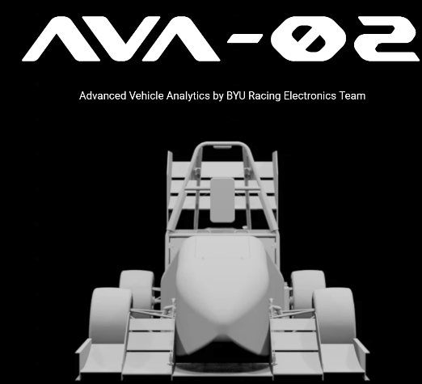
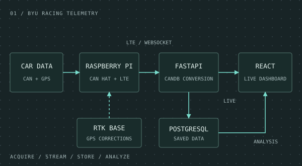
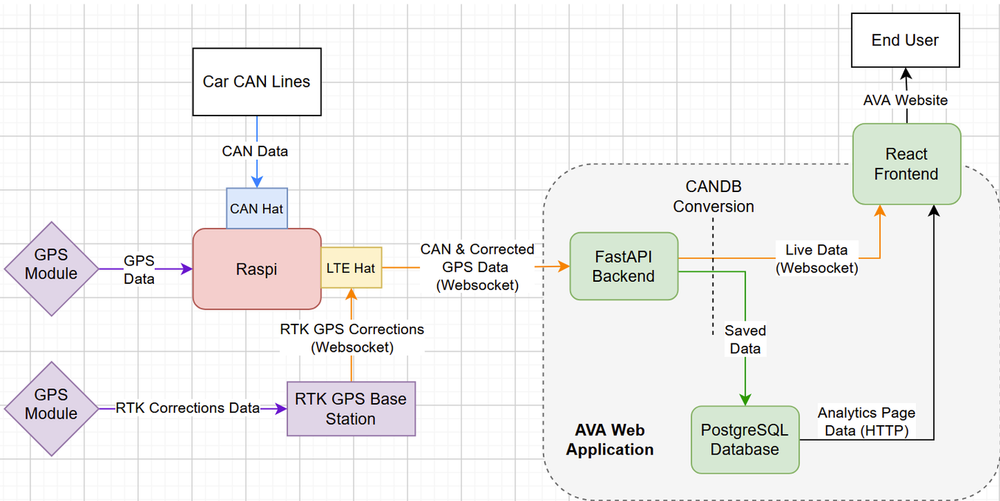

PROJECT 01 / TELEMETRY & DATA
BYU Racing live telemetry & data analysis
Live CAN and GPS telemetry, visualization, and analysis for BYU Racing's Formula SAE car.

01 / OVERVIEW
The project
Vehicle CAN data and GPS measurements feed a Raspberry Pi through a CAN HAT and GPS module. An LTE HAT streams CAN and corrected GPS data over WebSocket to the AVA web application. FastAPI handles the backend and CANDB conversion, React displays live data, and PostgreSQL stores data for later analysis.
02 / SYSTEM OUTLINE
How it connects

03 / COMPONENTS
Hardware & software
- Vehicle CAN lines, CAN HAT, and GPS module.
- Raspberry Pi with LTE HAT for telemetry transmission.
- RTK GPS base station for GPS corrections.
- FastAPI backend and CANDB conversion.
- React frontend for live visualization and saved-data analysis.
- PostgreSQL database for stored telemetry.
04 / PROJECT IMAGES
A closer look

